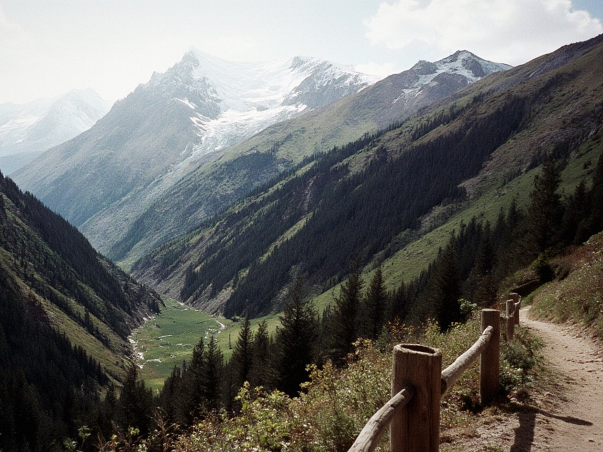
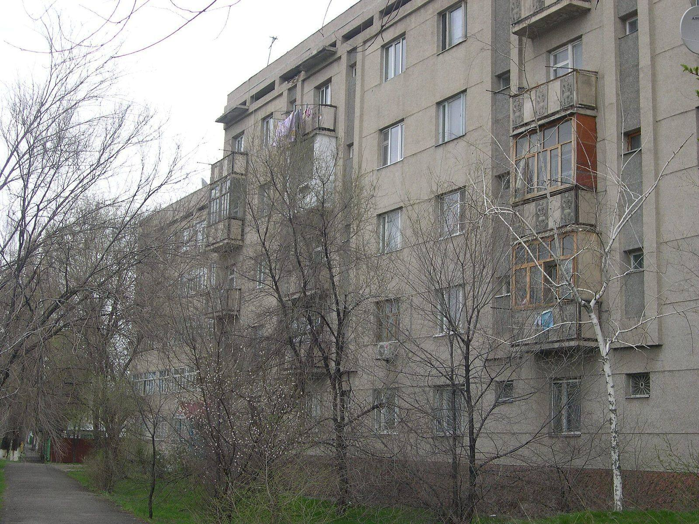
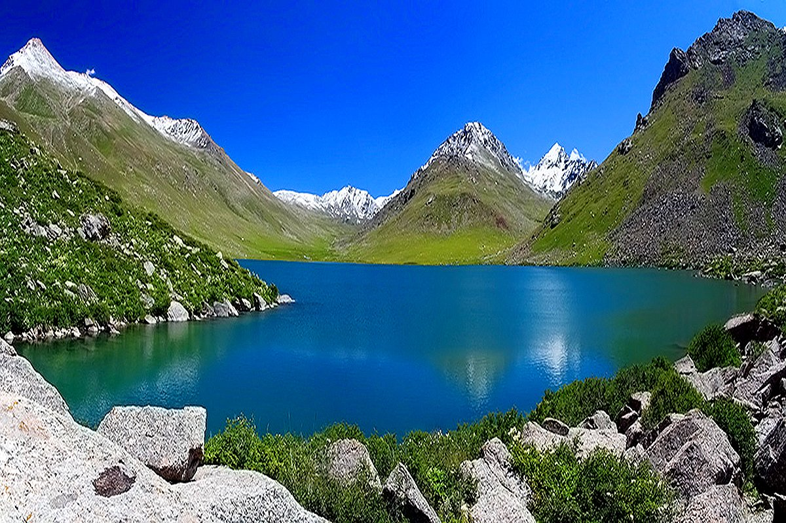
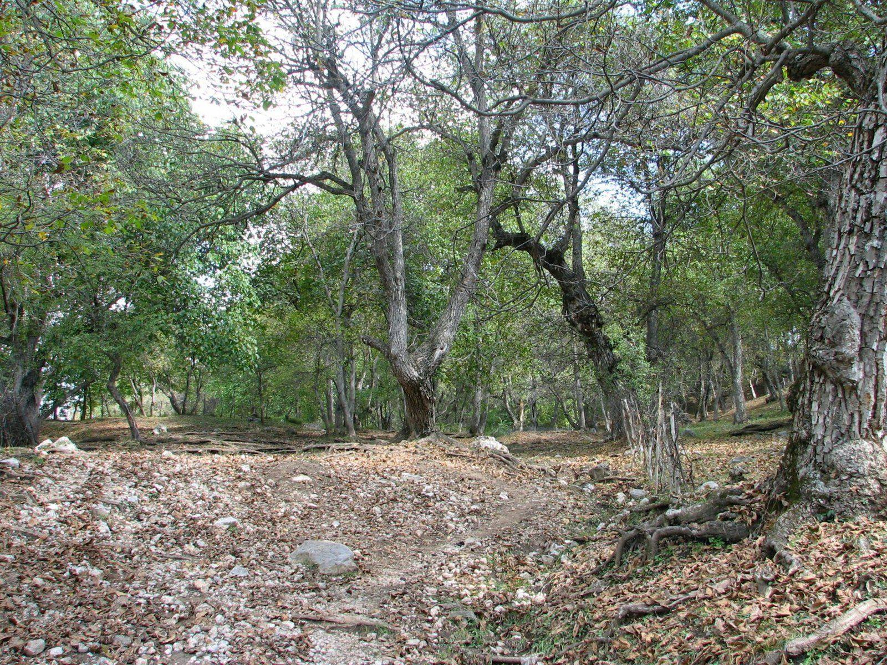

Environment
-

Environment · November 20, 2026
Donor Trims Talas Hydrology Grant 30%; Every Permanent Gauge Stays On
Only the extra moraine-lake surveys and observatory stipends slow this winter, the Talas River Hydrological Monitoring Service says.
-

Environment · November 19, 2026
Bishkek Agrees Second Waste-to-Energy Plant; Nurzhan's Air Reads 196
As Kyrgyzstan settles on a second rubbish-burning power plant, Nurzhan's own winter smog raises the question of what the city's air is made of.
-

Environment · November 18, 2026
Ilbirs Station Cameras Catch Three Snow Leopards on a Chatkal Slope
Footage from the Uuk-Bulak station's camera line shows the cats crossing a snow-dusted scree in one early-morning sequence, while herders ask who answers for lost stock.
-

Environment · November 18, 2026
Swiss Waste Aid Next Door Prompts Talas Valley to Count Its Own Rubbish
A Swiss-backed plan for towns in neighbouring Talas Oblast to share waste services has Iradi districts asking how far their own tips are from the river.
-

Environment · November 11, 2026
Fog Holds Heating Smoke Over Nurzhan as Air Index Reaches 183
Irad Gidromet's Sunday readings were the worst of the heating season so far, and residents are advised to keep windows shut in the morning.
-

Environment · November 6, 2026
Camera Traps Record Two Snow Leopards in Upper Besh-Tash, a First in Decades
Rangers, TSU scientists and Akjele elders are working out how to keep the cats and the returning flocks apart.
-

Environment · October 26, 2026
Ilbirs Station Opens at Uuk-Bulak to Study and Treat Irad's Snow Leopards
The small Talas State University research unit will care for injured and orphaned cats, with any return to the Chatkal hills subject to the clan councils' agreement.
-

Environment · October 1, 2026
Tremor Felt Across the Fergana Rim; No Damage Reported
A magnitude 4.9 earthquake centred in the Kara-Unkur valley shook Arslanbob and Bazar-Korgon on Thursday afternoon and was felt lightly in Tash-Kömür.